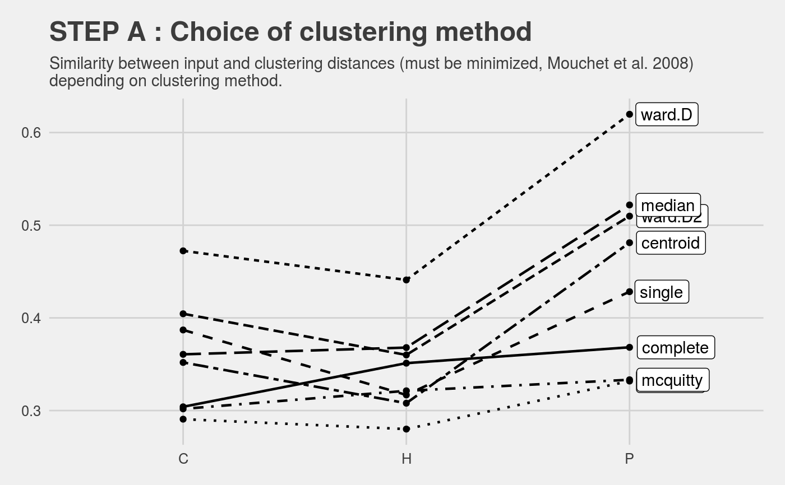
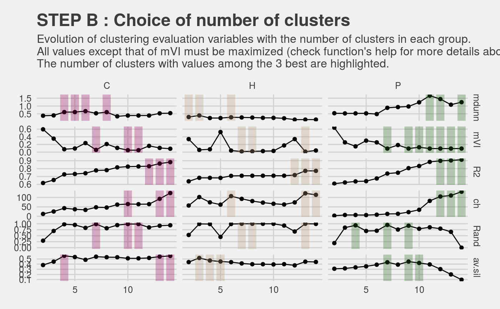

R/PRE_FATE.speciesClustering_step1.R
This script is designed to create clusters of species based on a distance matrix between those species. Several metrics are computed to evaluate these clusters and a graphic is produced to help the user to choose the best number of clusters (by subset of data if distance matrices are given for each of them).
PRE_FATE.speciesClustering_step1(mat.species.DIST)
| mat.species.DIST | a |
|---|
A list object with 2 elements :
a list object with as many objects of class
hclust as subset of data
a data.frame with 4 columns :
group : name of sub-dataset
nb.cluster : number of clusters used for the clustering
variable : evaluation metrics' name
value : value of evaluation metric
Two PRE_FATE_CLUSTERING_[...].pdf files are created :
STEP_1A
clusteringMethodto account for the chosen clustering method
STEP_1B
numberOfClustersfor decision support, to help
the user to choose the adequate number of clusters to be used into
the hclust method
This function allows one to obtain dendograms based on a distance matrix between species.
As for the PRE_FATE.speciesDistance method, clustering can be made
for sub-datasets, conditioning that mat.species.DIST parameter is
given as a list of dist object (instead of a dist
object alone).
The process is as follows :
hierarchical clustering on the dissimilarity matrix is realized with the
hclust function.
Several methods are available for the agglomeration : complete, ward.D, ward.D2, single, average (UPGMA), mcquitty (WPGMA), median (WPGMC) and centroid (UPGMC).
Mouchet et el. (2008) proposed of measure of similarity between the input distance and the one obtained with the clustering which must be minimized to help finding the best clustering method : $$ 1 - cor( input.DIST, clustering.DIST ) ^ 2$$
STEP_1A) is made to account for the comparison of these methods.once the hierarchical clustering is done, the number of clusters to keep should be chosen. To do that, several metrics are computed :
Dunn index (mdunn) : ratio of the smallest distance
between observations not in the same cluster to the largest intra-cluster
distance. Value between zero and infinity, and should be maximized.
Meila's Variation of Information index (mVI) :
measures the amount of information lost and gained in changing between
2 clusterings. Should be minimized.
Coefficient of determination (R2) : value between
zero and one. Should be maximized.
Calinski and Harabasz index (ch) : the higher
the value, the "better" is the solution.
Corrected rand index (Rand) : measures the
similarity between two data clusterings. Value between 0 and 1, with 0
indicating that the two data clusters do not agree on any pair of points
and 1 indicating that the data clusters are exactly the same.
Average silhouette width (av.sil) : Observations
with a large s(i) (almost 1) are very well clustered, a small s(i)
(around 0) means that the observation lies between two clusters, and
observations with a negative s(i) are probably placed in the wrong cluster.
Should be maximized.
STEP_1B) is produced, giving the values of these
metrics in function of the number of clusters used. Number of clusters with
evaluation metrics' values among the 3 best are highlighted to help the user
to make his/her optimal choice.The function does not return ONE dendogram (or as many as given
dissimilarity structures) but a list with all tested numbers of clusters.
One final dendogram can then be obtained using this result as a parameter in
the PRE_FATE.speciesClustering_step2 function.
hclust,
PRE_FATE.speciesDistance,
PRE_FATE.speciesClustering_step2
## Load example data data(MontBlanc) str(MontBlanc)#> List of 3 #> $ mat.releves :'data.frame': 12302 obs. of 4 variables: #> ..$ sites : int [1:12302] 660398 662913 663085 663104 663104 664839 751362 751377 751484 922672 ... #> ..$ species: chr [1:12302] "Abies alba Miller" "Abies alba Miller" "Abies alba Miller" "Abies alba Miller" ... #> ..$ abund : Factor w/ 7 levels "","+","1","2",..: 2 2 2 3 6 4 2 3 2 2 ... #> ..$ habitat: int [1:12302] 4 2 6 4 4 4 2 2 3 8 ... #> $ mat.traits :'data.frame': 337 obs. of 6 variables: #> ..$ species : chr [1:337] "X23" "X139" "X190" "X197" ... #> ..$ Disp : num [1:337] 4 5 7 6 7 1 4 7 7 7 ... #> ..$ Light : num [1:337] 2 2 3 3 5 3 5 5 5 3 ... #> ..$ Height : num [1:337] 1500 50 70 11 30 ... #> ..$ Palatability: Factor w/ 5 levels "","0","1","2",..: 4 5 5 5 5 5 5 5 5 5 ... #> ..$ GROUP : Factor w/ 3 levels "C","H","P": 3 2 2 2 2 2 2 2 2 2 ... #> $ mat.nicheOverlap: niolap [1:270, 1:270] NA 0.524 0.789 0.626 0.675 ... #> ..- attr(*, "dimnames")=List of 2 #> .. ..$ : chr [1:270] "X10053" "X10106" "X10113" "X10182" ... #> .. ..$ : chr [1:270] "X10053" "X10106" "X10113" "X10182" ...## MontBlanc$mat.traits : data.frame ## MontBlanc$mat.nicheOverlap : niolap object ## Calculate distance between species sp.DIST = PRE_FATE.speciesDistance(mat.species.traits = MontBlanc$mat.traits , mat.species.overlap = MontBlanc$mat.nicheOverlap , min.info.thresh = 0.9)#> #> ############## TRAIT INFORMATIONS ############## #> #> Number of species : 337 #> Measured traits : Disp, Light, Height, Palatability #> Groups : C, H, P #> Number of species in each group : 48 271 18 #> #> Number of species with traits : 337 #> Number of species with traits and no overlap information : 69 #> Number of species with overlap : 270 #> Number of species with overlap and no traits information : 2 #> #> Comparison of groups' dimensions : #> #> Group 1 : #> Trait distances : 48 48 #> Overlap distances : 38 38 #> #> Group 2 : #> Trait distances : 271 271 #> Overlap distances : 215 215 #> #> Group 3 : #> Trait distances : 18 18 #> Overlap distances : 15 15 #> #> Number of species with both trait and overlap distances: 268str(sp.DIST)#> List of 3 #> $ C:Class 'dist' atomic [1:703] 0.0846 0.2436 0.1439 0.3741 0.038 ... #> .. ..- attr(*, "Labels")= chr [1:38] "X10192" "X11256" "X12051" "X12060" ... #> .. ..- attr(*, "Size")= int 38 #> .. ..- attr(*, "call")= language as.dist.default(m = mat) #> .. ..- attr(*, "Diag")= logi FALSE #> .. ..- attr(*, "Upper")= logi FALSE #> $ H:Class 'dist' atomic [1:23005] 0.232 0.165 0.262 0.273 0.24 ... #> .. ..- attr(*, "Labels")= chr [1:215] "X10053" "X10106" "X10113" "X10182" ... #> .. ..- attr(*, "Size")= int 215 #> .. ..- attr(*, "call")= language as.dist.default(m = mat) #> .. ..- attr(*, "Diag")= logi FALSE #> .. ..- attr(*, "Upper")= logi FALSE #> $ P:Class 'dist' atomic [1:105] 0.382 0.192 0.277 0.252 0.395 ... #> .. ..- attr(*, "Labels")= chr [1:15] "X11313" "X11388" "X11726" "X11729" ... #> .. ..- attr(*, "Size")= int 15 #> .. ..- attr(*, "call")= language as.dist.default(m = mat) #> .. ..- attr(*, "Diag")= logi FALSE #> .. ..- attr(*, "Upper")= logi FALSE## Run hierarchical clustering and number of clusters' selection sp.CLUST = PRE_FATE.speciesClustering_step1(mat.species.DIST = sp.DIST)#> #> ############## CLUSTERING ############## #> #> Clustering method : average #> Clustering evaluation...## 2 .pdf files have been produced str(sp.CLUST)#> List of 2 #> $ clust.dendograms:List of 3 #> ..$ C:List of 7 #> .. ..$ merge : int [1:37, 1:2] -27 -8 -26 -17 -9 -29 -11 -25 -33 -3 ... #> .. ..$ height : num [1:37] 0.00661 0.00672 0.0078 0.01186 0.01203 ... #> .. ..$ order : int [1:38] 7 14 15 16 32 24 33 25 26 27 ... #> .. ..$ labels : chr [1:38] "X10192" "X11256" "X12051" "X12060" ... #> .. ..$ method : chr "average" #> .. ..$ call : language hclust(d = as.dist(x), method = clust.method) #> .. ..$ dist.method: NULL #> .. ..- attr(*, "class")= chr "hclust" #> ..$ H:List of 7 #> .. ..$ merge : int [1:214, 1:2] -5 -17 -188 -131 -160 -58 -169 -52 -82 -106 ... #> .. ..$ height : num [1:214] 0.00529 0.00662 0.0067 0.00718 0.00752 ... #> .. ..$ order : int [1:215] 27 81 129 208 29 166 78 79 95 165 ... #> .. ..$ labels : chr [1:215] "X10053" "X10106" "X10113" "X10182" ... #> .. ..$ method : chr "average" #> .. ..$ call : language hclust(d = as.dist(x), method = clust.method) #> .. ..$ dist.method: NULL #> .. ..- attr(*, "class")= chr "hclust" #> ..$ P:List of 7 #> .. ..$ merge : int [1:14, 1:2] -12 -5 -4 -9 -7 -1 2 -2 6 3 ... #> .. ..$ height : num [1:14] 0.0361 0.045 0.0489 0.0708 0.1343 ... #> .. ..$ order : int [1:15] 14 4 11 1 3 5 15 9 10 2 ... #> .. ..$ labels : chr [1:15] "X11313" "X11388" "X11726" "X11729" ... #> .. ..$ method : chr "average" #> .. ..$ call : language hclust(d = as.dist(x), method = clust.method) #> .. ..$ dist.method: NULL #> .. ..- attr(*, "class")= chr "hclust" #> $ clust.evaluation:'data.frame': 234 obs. of 4 variables: #> ..$ group : Factor w/ 3 levels "C","H","P": 1 1 1 1 1 1 1 1 1 1 ... #> ..$ nb.cluster: int [1:234] 2 3 4 5 6 7 8 9 10 11 ... #> ..$ variable : Factor w/ 6 levels "mdunn","mVI",..: 1 1 1 1 1 1 1 1 1 1 ... #> ..$ value : num [1:234] 0.379 0.399 0.613 0.613 0.67 ...